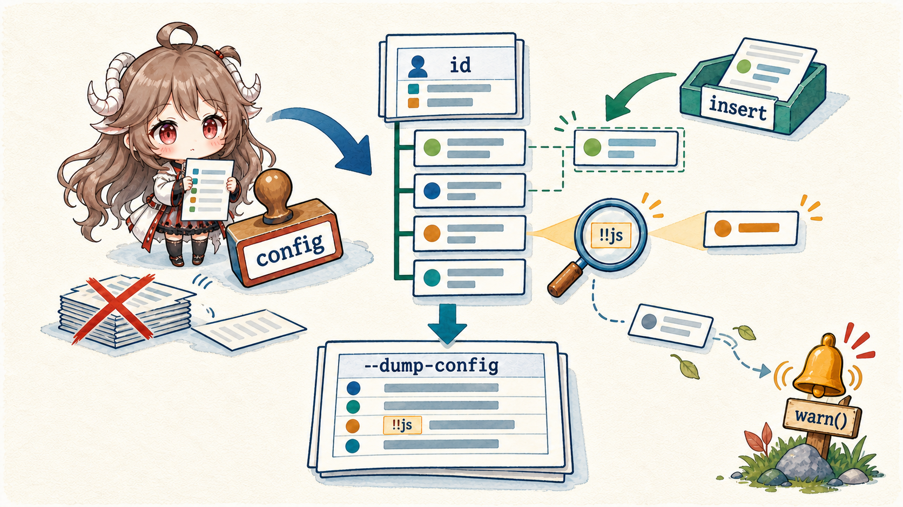
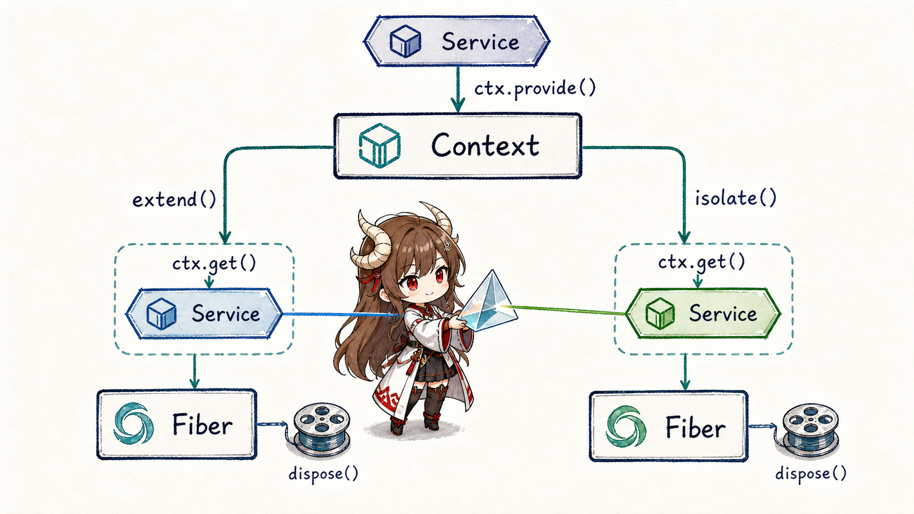
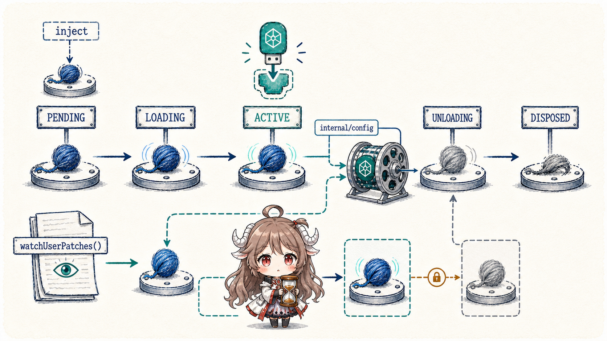

Part I crossed more than a dozen plugins in one turn: a model adapter prepared the request, prompt and tool assemblies met before a step, persistence subscribed to SessionEvent, approval and sandbox plugins governed effects, and Web observed the same run. Why can those components be replaced without trampling startup order, dependencies, and cleanup?
The answer is not a single plugin-manager object but two complementary protocols. Before boot, applyEntryPatches() compresses several sources into one deterministic configuration tree. After boot, Cordis Context, Service, and Fiber decide where a capability is visible, when it may activate, and who releases it.
Reading contract.After this chapter, you should be able to explain why a profile override must restate a complete config; why !!js must not evaluate during a config dump; how extend() and isolate() produce different service resolution; why a plugin stays PENDING without an injection; and why HMR settles a new generation before retiring the old one.
Evidence boundary.The chapter remains pinned to b150a55. DSH carries its patched Cordis fork under vendor/, so Context, Service, and Fiber claims come from the same snapshot. These contracts do not imply that every third-party plugin is safe or compatible.
1. Compose one tree before anything starts
1.1 Boot and dump share the same algorithm
vendor/include exports the pure function applyEntryPatches(data, patches, warn). composeEntries(), the boot include, and dsh --dump-config all call it instead of implementing approximate merges. The diagnostic tree and mounted tree therefore share one id index, insertion order, and warning policy.
This prevents a subtle but severe failure: a dump tool that deep-merges while boot replaces whole objects could show a valid-looking configuration that never runs. DSH prefers an explicit failure over a split between displayed and effective configuration.
1.2 A patch is an ordered operation, not YAML deep merge

PatchOptions has two central actions: find an entry by id and replace fields, or add entries through insert. The critical DSH rule is that an id-targeted patch replaces the entire config; it does not recursively merge fields. Any bundle setting that must survive has to be restated.
- id: llm-deepseek
config:
model: deepseek-chat
apiKey: !!js process.env.DEEPSEEK_API_KEY
- insert:
- id: local-plugin
name: ./local-plugin.mjs!!js is not arbitrary code executed by the YAML parser. It remains an expression node. The Loader waits until declared injections are active, then resolves it through internal/config in the entry's own context. --dump-config prints the expression verbatim, so a diagnostic command does not depend on runtime environment or trigger its effects.
An entry inserted earlier in one list is immediately indexed, allowing later patches to configure or disable it. An unmatched id is not swallowed; it is sent to warn() with its layer label. A misspelled plugin id becomes a visible diagnostic.
2. Context defines the local world of service resolution
2.1 The root Context installs four built-in services
Context constructs a root Fiber and installs reflect, registry, events, and logger. Context is a Proxy: normal property reads go through the service resolver, while methods such as ctx.plugin(), ctx.inject(), and ctx.on() are mixed in by the built-ins.
A plugin's ctx is therefore not a global service bag. It is a scoped view carrying a parent chain, isolation map, intercept map, and current Fiber. Two plugins reading ctx.llm can resolve different providers when their scope labels differ.
2.2 extend inherits; isolate redirects one service domain

extend(meta) creates a prototypal child without mutating its parent. With no isolation change, service reads keep the same label. isolate(name, label) copies the isolation map and changes only the selected service name. Provides and reads beneath that child enter a new resolution domain; all other services continue through the parent scope.
This fits an agent runtime well: a subtree may replace its LLM, session store, or approval provider without cloning the application. The same label can deliberately join two branches. intercept(name, config) keeps the provider identity but merges service-specific configuration from root toward the current scope.
| Operation | What it changes | What it preserves |
|---|---|---|
extend() | Adds metadata to a child context. | Service labels and the parent object remain unchanged. |
isolate() | Redirects one service name to another label. | All other services inherit normally. |
intercept() | Adds local configuration for one service. | Does not replace the provider. |
provide() | Registers an implementation in the current label. | The registration belongs to its Fiber rather than global state. |
3. Service couples capability registration to ownership
3.1 Constructing a Service registers the provider
The Service base calls ctx.reflect.provide(name, this, check) from its constructor. This is not a raw Map write: the provide operation becomes an effect owned by the current Fiber, and the provider disappears automatically when that Fiber unloads.
export class SessionStore extends Service {
constructor(ctx: Context) {
super(ctx, 'sessions')
}
}
ctx.plugin(SessionStore)
const store = ctx.get('sessions')That removes the dangling state in which a plugin has unloaded but its service still points at an old instance. Callable services, Config schemas, and intercept configuration stay on the same contract. Consumers declare injection names rather than importing a concrete provider.
3.2 Injection is an activation condition, not a later null check
After a runtime declares required services, Registry creates a Fiber. Missing dependencies keep it PENDING. When providers appear, the Fiber snapshots their implementations, validates configuration, and enters LOADING; only a completed callback and init hooks make it ACTIVE. Provider replacement or disappearance unloads the old activation or returns it to a waiting path.
Startup order thus becomes a dependency graph rather than handwritten sequencing. Entry order still affects the tree and hook order, but an unavailable capability is never represented as an active plugin that may fail later at an arbitrary read.
4. Fiber turns lifecycle into structured ownership
4.1 Every effect belongs to the current Fiber
Fiber tracks validated configuration, required-service snapshots, effects, disposers, errors, and state transitions. Resources created through ctx.on(), ctx.provide(), or ctx.effect() join that Fiber and dispose in reverse registration order.
Reverse order is meaningful. If a plugin starts a worker and then registers a listener, teardown should stop accepting new events before terminating the worker. Async disposers are awaited, and concurrent disposal joins the same cleanup rather than running it twice.
4.2 HMR swaps generations instead of mutating one object

watchUserPatches() hands profile and home patch changes to Cordis HMR. A refresh rereads include options, recomposes the complete patch list, and submits a new generation. Lazy config resolves again after declared injections become active, so provider replacement can change expression results.
Correct hot replacement briefly requires two ownership generations: the new one mounts and settles before the old one enters UNLOADING. Import, validation, or activation failure is surfaced rather than leaving half an apparently updated tree. For a long-running agent, this is much closer to a transaction than mutating a config object and emitting “changed.”
5. Four questions locate composition failures
- Was the tree composed correctly?Use
--dump-configto verify ids, insertion positions, layer sources, and whole-config replacement. - Did the module resolve?Check the installation/profile anchors for bare specifiers and the entry's base URL.
- Are dependencies satisfied?Inspect a PENDING Fiber and whether provider and consumer use the same isolation label.
- Did lifecycle converge?Verify failed generations, provider replacement, and disposal—not merely whether the plugin callback ran once.
Those are composition, resolution, injection, and ownership failures. Calling all four “the plugin did not load” forces debugging to bounce between YAML, imports, service lookup, and leaked resources.
Part III moves from the plugin tree to SessionEvent. When the loop, tools, and UI are replaceable, what remains the shared runtime fact? DSH's answer is that model-visible state must first enter a projectable event log.
Source references
- profile-boot.ts and profile.ts: bundle, profile, home, and CLI patch layers.
- vendor/include: PatchOptions, expression nodes, and applyEntryPatches.
- Context, Service, and Fiber: scopes, capabilities, and lifecycle.
- app-boot README: mounting, config dumps, user patches, and hot replacement.